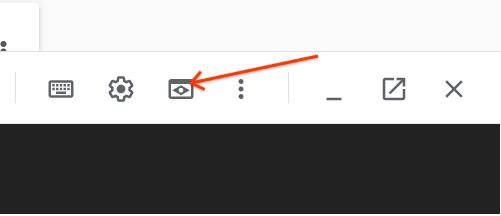

1 Containerize Applications¶
Objective:
- Use GCP Cloud Source Repositories
- Push Images to GCR and DockerHub
- Automate local Development with Docker-Compose
Prepare the Cloud Source Repository Environment with Module 6 Assignment¶
This lab can be executed in you GCP Cloud Environment using Google Cloud Shell.
Open the Google Cloud Shell by clicking on the icon on the top right of the screen:

Once opened, you can use it to run the instructions for this lab.
Cloud Source Repositories: Qwik Start
Step 1 Locate directory where docker-compose manifest going to be stored.
cd ~/ycit019_2022/
git pull # Pull latest Mod6_assignment
In case you don't have this folder clone it as following:
cd ~
git clone https://github.com/Cloud-Architects-Program/ycit019_2022
cd ~/ycit019_2022/Mod6_assignment/
ls
Step 2 Go into the local repository you've created:
export student_name=<write_your_name_here_and_remove_brakets>
Important
Replace above with your project_id student_name
cd ~/$student_name-notepad
Step 3 Copy Mod6_assignment folder to your repo:
git pull # Pull latest code from you repo
cp -r ~/ycit019_2022/Mod6_assignment/ .
Step 4 Commit Mod6_assignment folder using the following Git commands:
git status
git add .
git commit -m "adding `Mod6_assignment` with docker-compose manifest"
Step 5 Once you've committed code to the local repository, add its contents to Cloud Source Repositories using the git push command:
git push origin master
Step 6 Review Cloud Source Repositories
Use the Google Cloud Source Repositories code browser to view repository files.
You can filter your view to focus on a specific branch, tag, or comment.
Browse the Mod6_assignment files you pushed to the repository by opening the Navigation menu and selecting Source Repositories:
Click Menu -> Source Repositories > Source Code.
Result
The console shows the files in the master branch at the most recent commit.
2 Build and push Docker images to Google Container Registry (GCR)¶
2.1 Build and push gowebapp-mysql Image to GCR¶
Step 1 Locate folder with mysql config
cd ~/$student_name-notepad/Mod6_assignment/gowebapp-mysql
Step 2 Review the existing Dockerfile
cat Dockerfile
output:
FROM mysql:8.0
LABEL maintainer "student@mcgill.ca"
LABEL gowebapp-sql "v1"
COPY gowebapp.sql /docker-entrypoint-initdb.d/
Step 2 Set the Project ID in Environment Variable:
export PROJECT_ID=<project_id>
Here is how you can find you project_ID:

Set the project ID as default
gcloud config set project $PROJECT_ID
Step 3 Enable the required APIs:
gcloud services enable containerregistry.googleapis.com
Step 4 Build gowebapp-mysql Docker image with GCR registry address locally
docker build -t gcr.io/${PROJECT_ID}/gowebapp-mysql:v1 .
Build the image locally. Make sure to include "." at the end. Make sure the build runs to completion without errors. You should get a success message. Run and test Docker images locally
Step 5 Push the image to gcr.io:
docker push gcr.io/${PROJECT_ID}/gowebapp-mysql:v1
Step 6 Login to GCP console -> Container Registry -> Images
Result
Docker images has been pushed to GCR registry
2.1 Build and push gowebapp Image to GCR¶
Step 1 Locate folder with mysql config
cd ~/$student_name-notepad/Mod6_assignment/gowebapp
Step 2 Review the existing Dockerfile
cat Dockerfile
output:
FROM golang:1.16.4
LABEL maintainer "student@mcgill.ca"
LABEL gowebapp "v1"
EXPOSE 80
ENV GO111MODULE=auto
ENV GOPATH=/go
COPY /code $GOPATH/src/gowebapp/
WORKDIR $GOPATH/src/gowebapp/
RUN go get && go install
ENTRYPOINT $GOPATH/bin/gowebapp
Note
We've updated our application to support golang version 1.16.
Step 4 Build gowebapp Docker image with GCR registry address l locally
docker build -t gcr.io/${PROJECT_ID}/gowebapp:v1 .
Build the image locally. Make sure to include "." at the end. Make sure the build runs to completion without errors. You should get a success message. Run and test Docker images locally
Step 5 Push the image to gcr.io:
docker push gcr.io/${PROJECT_ID}/gowebapp:v1
Step 6 Login to GCP console -> Container Registry -> Images
Result
Docker images has been pushed to GCR registry
Step 7 Delete locally build images, as we want to test how images will be pulled from gcr registry in the next step:
docker rmi gcr.io/$PROJECT_ID/gowebapp:v1
docker rmi gcr.io/$PROJECT_ID/gowebapp-mysql:v1
2.3 Test application by running with Docker Engine.¶
Step 1 Create Docker user-defined network
To facilitate cross-container communication, let's first define a user-defined network in which to run the frontend and backend containers:
docker network create gowebapp \
-d bridge \
--subnet 172.19.0.0/16
Step 2 Launch backend container
Next, let's launch a frontend and backend container using the Docker CLI. First, we launch the database container, as it will take a bit longer to startup, and the frontend container depends on it. Notice how we are injecting the database password into the MySQL configuration as an environment variable:
docker run --net gowebapp --name gowebapp-mysql --hostname gowebapp-mysql \
-d -e MYSQL_ROOT_PASSWORD=rootpasswd gcr.io/${PROJECT_ID}/gowebapp-mysql:v1
Step 3 Wait for mysql container to start
docker ps
docker logs <id>
You should see following output: [Server] /usr/sbin/mysqld: ready for connections
Step 3 Launch frontend container
Now launch a frontend container, mapping the container port 80 - where the web application is exposed - to port 8080 on the host machine:
docker run -p 8080:80 --net gowebapp -d --name gowebapp \
--hostname gowebapp gcr.io/${PROJECT_ID}/gowebapp:v1
Step 4 Test the application locally
Now that we've launched the application containers, let's try to test the web application locally.
You should be able to access the application at Google Cloud Web Preview Console:

Note
Web Preview using port 8080 by default. If you application using other port, you can edit this as needed.
2.4 Cleanup running applications and unused networks¶
docker ps
docker rm -f <container_id_gowebapp> <container_id_gowebapp-mysql>
docker network
docker network rm gowebapp
3 Docker Compose¶
3.1 Test application locally with Docker Compose¶
Task: Automate local testing with Docker Compose by creating
docker-compose.yaml file which contains:
-
User-defined network
gowebapp1 -
Service
gowebapp-mysql -
Service
gowebapp
Reference
Docker Compose v3 documentations
Implementation
- Ensure that
Mysqlstart first and thenwebappservices - Ensure that
Mysqldatabase is fully up prior to startwebappservices using healthcheck feature of docker compose. - Ensure that
webapp-mysqlandwebappbuild with Docker-Compose - Ensure that environment variable
MYSQL_ROOT_PASSWORDis set inside of the docker compose file.
Step 1 Create compose file
cd ~/$student_name-notepad/Mod6_assignment
Edit existing docker-compose file:
edit docker-compose.yaml
Create structure as following:
#TODO Specify docker-compose file '3.4'
services:
gowebapp-mysql:
#TODO Make a build in the `gowebapp-mysql` folder
#TODO Add Environment variable for MYSQL_DATABASE
#TODO Add healthcheck test that you can connect to Database and execute `SHOW DATABASES`
#TODO Add healthcheck, timeout: 45s, interval: 10s, retries: 10, start_period 15 sec
#TODO Reference doc for healthcheck https://docs.docker.com/compose/compose-file/compose-file-v3/#healthcheck
#TODO Add Restart `always`
#TODO Attach to created to User-defined network `gowebapp1`
gowebapp:
#TODO Make a build in the appropriate folder
#TODO Allocate ports so that contaiener port mapped to local port
#TODO Restart container in case failed
#TODO Attach to created to User-defined network `gowebapp1`
#TODO Add Environment variable for GOPATH
#TODO Add Dependency for `gowebapp-mysql` to start first
networks:
#TODO Create User-defined network `gowebapp1` type `driver: bridge`
Note
In this case as we using Compose v3.4, you can also try start_period in the health-check
Step 2 Run compose file
export CLOUDSDK_PYTHON=python2 # https://github.com/google-github-actions/setup-gcloud/issues/128
docker-compose up -d
Step 3 Test the application locally
Now that we've launched the application containers, let's try to test the web application locally.
You should be able to access the application at Google Cloud Web Preview Console:
Note
Web Preview using port 8080 by default. If you application using other port, you can edit this as needed.
Step 4 Tear down environment
docker-compose down
Step 5 Cleanup created networks
docker network ls
Important
Make sure gowebapp and gowebapp1 networks has been deleted!!!
3.2 Commit docker-compose file to repository and share it with Instructor/Teacher¶
Step 1 Commit gowebapp and gowebapp-mysql folders using the following Git commands:
git add .
git commit -m "adding docker-compose.yml"
Step 2 Push commit to the Cloud Source Repositories:
git push origin master
3.3 Submit link to your assignment to LMS¶
Submit link to your Cloud Source Repository to LMS, replace with you values
https://source.cloud.google.com/${PROJECT_ID}/$student_name-notepad
e.g: https://source.cloud.google.com/ycit019_2022-project/ayratk-notepad